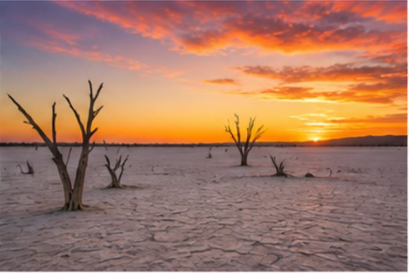

Top Destinations

Okavango Delta
A world-famous inland delta filled with wildlife, waterways and unique safari experiences.

Chobe National Park
Home to one of the largest elephant populations in Africa, offering incredible safari views.

Makgadikgadi Pans
Vast salt flats creating a surreal and peaceful landscape, especially stunning at sunset.

Tsodilo Hills
A UNESCO heritage site known for ancient rock art and deep cultural significance.